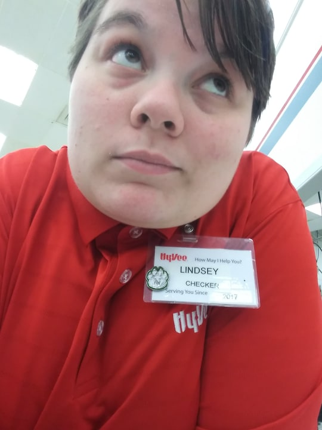

Hello! My name is Lindsey, but most (if not all) of my friends call me Lyn! I am currently a senior and will graduate in Spring of 2021 with a degree in Interactive Digital Media: Computer Science Programming. I also have a minor in Spanish. In addition to Web Development II, I am taking:
I didn't do much this summer aside from working at Hyvee as a deli clerk. I actually got that job this summer after being a cashier for two years at the same Hyvee location. It's definitely a change from my previous position, but I like it! When I wasn't at work, I usually was playing computer games or talking with my boyfriend.
A picture I took of myself when we weren't busy at work one night.
I usually work the closing shifts, so it gets pretty slow at the end of my shifts.
The only other jobs I've ever worked aside from my cashiering and deli clerk jobs at Hyvee are in food service. I was a host at Applebee's for a short 3 months and I currently work as a carhop at the Sonic here in town.
I have a lot of things I like to do! I draw a LOT (there are a ton of doodles in my notebooks and I have almost 2 binders full of old art).
I also play the flute. I've known how to play for 13 years and I've done marching band for 9 years (4 years in high school and 5 years here at Northwest). The picture at the top of the page was taken just after the Hughes Field House grand opening last year!
I also love to sing, but I'm very shy about my own voice. In addition to liking to sing, I love to participate in theater. I was either on stage or part of the tech crew every single year for my high school's theater department.
In Web Development I, I made a website for my artwork. On that website, I linked visitors to all of the places I was active. Those links can be found below along with my username of each webpage.
| deviantArt | Tumblr | Twitch | Patreon | Redbubble | |||
|---|---|---|---|---|---|---|---|
| LuckyJiku | LuckyJiku | Jiku's Art Corner | Jiku's Art Blog | LuckyJiku | LuckyJiku | LuckyJiku | LuckyJiku |